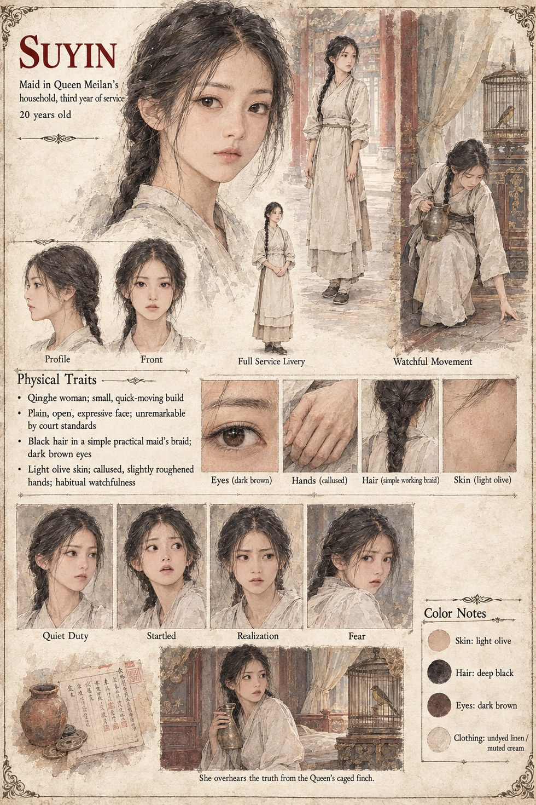

Suyin
Maid in Queen Meilan's Household · third year of service · 20 years old
A maid in Queen Meilan's household, in her third year of service and unremarkable by every court standard except a habitual watchfulness she never quite leaves off duty. A small private ritual is the only real extravagance anyone would find if they looked: a jar of coins counted by candlelight each new moon, not for the money so much as for the pleasure of watching a number grow.
She drinks what she assumes is a spilled mouthful of ordinary water while tending the Queen's caged moon-finch, and spends the next fifteen minutes understanding, through the bird's own memory, exactly what it has watched happen in that room for longer than she has served in it. She tells no one before she is found dead on the covered bridge at dawn, the fall recorded as an accident by a physician who is never given reason to look closer.
“Not for the money. For the pleasure of watching a number grow.”
Appears in The Listening Water